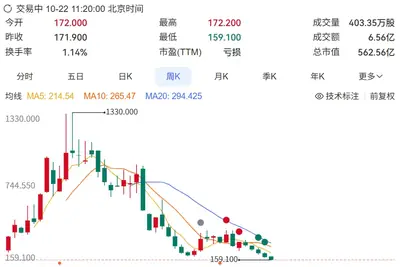
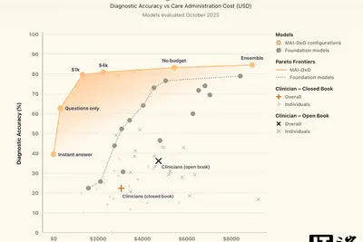
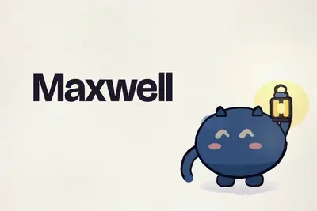
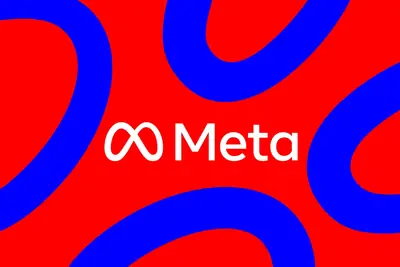
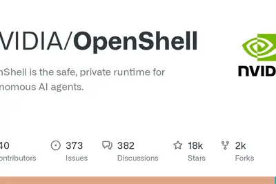
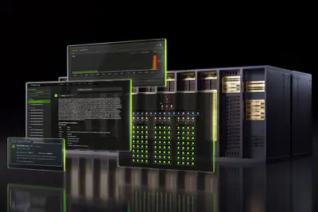
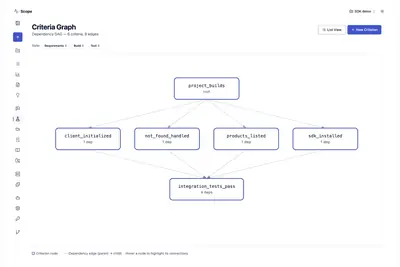

全部主題
Anthropic 推出主動式 Agent App「Claude Duet」研究預覽版，由 Claude Opus 5.5 驅動，首波只開放美國的 Pro 與 Max 用戶，台灣暫時無法使用。
Canva is diving even deeper into AI with the launch of an image generation model that competes directly with those from OpenAI, Microsoft, and Google. The model, called Canva Craft, uses a two-stage architecture that allows it to plan a design before generating an image, allowing
【科技早餐】今天精選 7 則國內外重要科技新聞。 ＊Google Cloud 引進 OpenAI GPT-6 模型，兩大 AI 對手跨陣營合作 Google Cloud 於 10 月 21 日宣布，將 OpenAI 最新的 GPT-6 Astra、GPT-6.1 Sol 與 GPT-6 Luna 模型納入旗下 Model Garden 平台，涵蓋程式開發、專業工作、AI 代理及大量日常應用。目前先向部分企業客戶提供私人預覽，預計未來幾週全面開放。這項合作格外受到關注，因為 Google 本身擁有 Gemini 模型，如今卻選擇將競爭對手 OpenAI 的
For years, AI leaders have touted healthcare as one of the clearest examples of where their technology will improve lives. Now "it is finally here," Microsoft AI CEO Mustafa Suleyman tells The Verge. The company claims to have developed an AI-powered tool it says can diagnose con
Microsoft points the blame for ConnectWise's breach at a China-aligned hacker, which relied on AI agents to rapidly hack into thousands of its customers.
美國零售巨擘沃爾瑪今天發表一項新工具，允許 Meta 的 Muse 等人工智慧代理代替顧客購物，此一開放做法與 […]
早安。
IT之家 10 月 23 日消息，据 CNBC 报道，英伟达 CEO 黄仁勋周四接受采访时表示， 到 2029 年，内存芯片行业不太可能出现过剩的情况 。此前一周，由于市场对产能过剩和需求放缓的担忧，存储板块股票遭遇集中抛售。 黄仁勋指出，“内存的一大好处是， 你总是可以用得更多 （You can always use more）。”他补充说，高带宽内存 HBM 在未来数年内仍将被持续广泛采用。 黄仁勋还表示，“我们是全球首家将手机中采用的 LPDDR 内存引入数据中心的企业。这使我们能够提供比当今世界上任何产品高出一倍能效的性能， 因此我们也将继续大量
在美國4大超大規模雲端業者（Hyperscaler）中，Meta率先公布財報，供應鏈緊盯其資本支出變化與方向。Meta執行長Mark Zuckerberg指出，正在持續擴建運算容量，以便在...
AI泡沫化的討論持續升溫，從大型語言模型、AI資料中心到人形機器人，市場開始追問，龐大的資本投入究竟何時才能轉化為相應的營收與獲利？
Meta Platforms最新營收表現與財測皆優於市場預期，除核心廣告業務維持強勁動能外，更重要的是新推出的AI代理（AI Agent）Muse與新模型Muse Wonder展現競爭力，...
中國人工智慧（AI）新創月之暗面（Moonshot）加速在新加坡的布局，在當地開出多種職缺。
三星電機（Semco）與NVIDIA日前宣布戰略合作，將共同投資南韓世宗、釜山據點的AI半導體封裝載板專用產線，並自2026年起展開多年長期供貨，進一步擴大三星電機在AI...
“IT早报”时间，大家好，现在是 2026 年 10 月 23 日星期五，今天的重要科技资讯有： 1. 陕西神木市交管大队回应问界汽车碰撞起火事故：灯柱被烧短路、变色，目前正喷漆 近日，一辆问界汽车在陕西榆林神木市一路口处发生碰撞起火。据新京报报道，陕西神木市交管大队回应了“问界汽车撞击交通灯柱后起火”事件。“交通灯柱没断”，该大队工作人员称，当时车辆起火后将交通灯柱里面的线烧短路了，灯柱被烧得变色，目前正喷漆。>> 查看详情 2. 武汉通回应苹果免费开卡、安卓端收费 15 元：安卓系统手机品牌众多，接入适配成本更高 武汉通近日上线苹果 Apple Pa

IT之家 10 月 23 日消息，密码管理服务商 1Password 昨日（10 月 22 日）发布博文，宣布推出 1Password for Agents 平台， 让个人 AI 智能体全程不接触、不存储用户的密码或验证码情况下，代用户完成网站登录。 IT之家附上官方介绍视频如下： 该功能面向个人及家庭版用户推出，首批支持 Meta Muse、OpenAI ChatGPT Work 与 Dots、Anthropic Claude Duet、Grok Bot 及 Town 等主流 AI 智能体。 官方表示随着 AI 智能体逐步承担订餐、购物、订票、整理资料
IT之家 10 月 23 日消息，当地时间 10 月 22 日，OpenAI 宣布全面开放决策 API（Decisions API）。 据介绍， 该 API 基于 GPT‑6 Luna 构建 ，将 Luna 的模型智能聚焦于具有限定答案（bounded answers）的问题，协助应用程序与智能体基于文本、图像及结构化输入做出准实时决策 —— 其响应速度比通过 Responses API 调用 GPT‑6 Luna 提升了高达 10 倍 。 定价方面，决策 API 输入每百万 token 收费 0.1 美元 （IT之家注：现汇率约合 0.67 元人民币）
IT之家 10 月 23 日消息，据《商业内幕》今天（23 日）报道，近日，在斯坦福大学，OpenAI CEO 萨姆 · 奥尔特曼面向台下数百名担忧未来职业前景的学生发表演讲。 奥尔特曼认为，面对 AI 大举进军数学研究领域，数学家经历了类似“哀悼”的几个阶段。起初是难以置信，随后陷入痛苦。“第一天，大家的反应大概是：‘ 我们完蛋了，数学这个领域也完了 。’‘还是去 劝研究生转专业吧 。’” 接着，痛苦转化成了愤怒。“到了第三天，大家可能开始觉得：‘ OpenAI 这么干实在太过分了 。’” 按照奥尔特曼的描述，到了第五天，数学家 开始接受现实 ：在数学
IT之家 10 月 23 日消息，当地时间 10 月 22 日，微软宣布，在基于 MIMIC-IV-ED 数据集评估美国急诊科 常见就诊病例 时，其研发的 AI 诊断系统 MAI-DxO 的诊断准确率达到了人类医生的 1.7 倍。 该系统命名为 Microsoft AI Diagnostic Orchestrator，简称 DxO，通过统一编排多个 AI 智能体来模拟医生专家联合会诊的过程 —— 各智能体协同向患者问诊、开具化验检查，并对潜在诊断展开深入研判与辩论。 而在基于《新英格兰医学杂志》（NEJM） 复杂病例 展开的模拟评估中， MAI-DxO

以色列特拉維夫 AI 新創公司 doubleAI 於 19 日宣布推出首款人工智慧模型「Maxwell」，旨在 […]

IT之家 10 月 23 日消息，在接受 Dwarkesh 播客时，英特尔首席技术官（CTO）普什卡 · 拉纳德（Pushkar Ranade）表示： 即便资金充足，全球尖端晶圆产量也难以扩大十倍，更现实的增长上限约为两倍。 在播客节目中，拉纳德被问及“世界上是否有足够工具，把前沿晶圆产量提高 10 倍”。对此他回应称“不是 10 倍，但可能达到 2 倍，是的。”他认为这一限制源于整个半导体供应链协同扩产的能力，而非某个单一环节。 IT之家援引博文介绍，拉纳德指出，AI 计算能力过去十年大约以每年三倍的速度增长，但制造先进芯片所需的关键设备、洁净室和晶圆
Should OpenAI command an over $1 trillion valuation with this round, it would break records as the most highly valued private company ever.
The next competitive advantage in enterprise AI has less to do with which model you choose than with what you build around it. That’s an important shift. For the past several years, much of the AI conversation has centered on model capability: bigger models, better reasoning, lar
Meta has tweaked its business terms to remove language suggesting that it could freely train its AI models on news sites, like The Verge - but legal experts say these changes aren't enough to address their concerns. "This does nothing to restrict the 'associated with your product

Meta has re-enabled Muse sharing after security researchers had reported that public conversation links could be easy to find. The researchers said they had been able to find Muse pages like a marketing company's internal revenue review and a small business owner's loan applicati
WIRED spoke with the founders of the Aged Intelligence Society, a fast-growing events startup that brings women together to “solve midlife problems using frontier tools.”
Oh sure, SpaceX's credit risk is pretty high because it's about to borrow another $40 billion to spend on Nvidia chips, but who cares about that? SpaceX and Tesla have formed special committees to discuss a merger! The degree to which you find this merger compelling likely has to
DE STAAT - FREEDOM (Official Music Video) OK well this is a first for me... at 00:44 in this new music video by Dutch alternative rock band De Staat : The visual effects are credited to Matties Grooten of Fake it or Leave it . Via flir on Hacker News Tags: music , ai , generative
The new feature allows agents to log into a customer's personal accounts while still protecting the private credentials that secure those accounts.
OpenAI is launching its decision model to the world. Can it compete with the original Jev?
Fast, focused, low-cost decisions for any application.
Discord's latest update released today has a big improvement for Markdown previews: they should now render correctly instead of with "a bunch of symbols," according to the company. LLMs and AI agents often rely on Markdown files for instructions and context, so these improved pre
A scalable AI system requires a strong foundation. Data, engineering, platforms, operating models, and governance must converge to work as one. This session from MIT Technology Review’s EmTech Future conference explores what it takes to build that foundation in a highly regulated
Donating Agent Skills to the Agentic AI Foundation News today from Anthropic: We’re committed to keeping Agent Skills open, community-driven, and vendor-neutral. Today, we are donating the standard to the Agentic AI Foundation (AAIF) under the Linux Foundation, which we co-founde
Article URL: https://github.com/NVIDIA/OpenShell Comments URL: https://news.ycombinator.com/item?id=50198675 Points: 271 # Comments: 139

The Nintendo Switch 2 has apparently been jailbroken, and a modder has already shown the console running a custom version of Mario Kart World featuring new playable characters like Cinnamoroll, the red Angry Bird, Peter Griffin, and Steve from Minecraft. OpenAI's Codex helped mak
Wildwood is the most ambitious film yet from Laika, the stop-motion studio best known for the likes of Coraline and ParaNorman. It's a sprawling fantasy adventure that took five years to complete. The process involved more 230 puppets - including 36 of the main character Prue alo
To help developers rapidly build world models, which help physical AI systems understand and simulate the real world, NVIDIA has expanded the Cosmos platform with new training tools, simulation checkpoints and Cosmos Data Factory blueprints. Ranking top five on six different open

微軟開源評測平臺Scope，可讓GitHub Copilot、Claude Code等AI程式開發代理執行指定任務，檢查是否按照文件正確使用軟體開發套件（SDK）、應用程式介面（API）及相關工具。平臺也會記錄操作過程與測試結果，協助開發團隊找出代理執行任務時遇到的問題。

At GTC Berlin, banks, payment companies and financial data providers are showing what production-scale intelligence looks like — built on NVIDIA accelerated computing, powered by open weight models and running on their own infrastructure. Revolut is rebuilding its technology stac